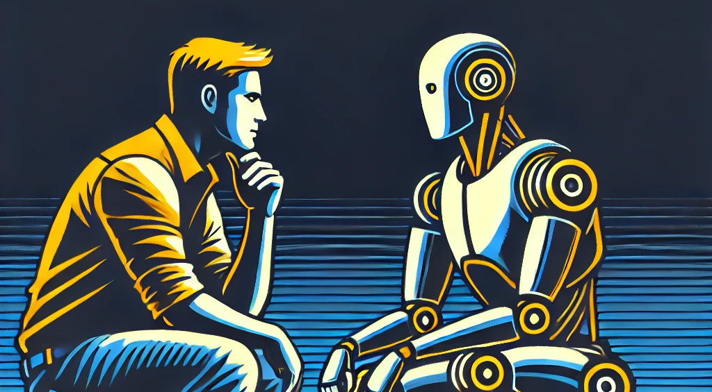

This is a favorite topic of mine at the moment, fueled by 2 ideas:
- The most powerful app on any of our computers right now is the terminal (or command line for windows folks).
- The most powerful idea-generation tool any of us have access to is a sheet of paper and pen.
The Terminal: Why Don’t We Use It?
I remember being a kid in the days where you still had to be able to navigate DOS to get PC games to play. There was lots of dir, cd directory, dir, program.exe until you were eventually rewarded with a cascade of text and the first graphics introducing the start of the game.
The terminal still exists today, but regular users rarely even see it, and probably wouldn’t know the first thing about how to interact with it. Anyone in a tech role recognizes that this black screen with a blinking cursor gives you access to everything, in a much deeper way than a gui ever can.
If it is so powerful, why doesn’t everyone use it regularly? Well, you kind of have to know a long list of incantations to make it do what you want. Everything has to be precisely coded in, in a very precise way. The basics of navigation require ls and cd, making and deleting directories has mkdir, rm and rm -rf. That’s 4 (and a half) commands you have to just know for basic tasks that are “obvious” in a GUI.
Ordinary users moved away from the terminal because they don’t have to learn the incantations for every task they might want to do. GUI’s present everything to the user, with nicely signposted happy path that you just have to click on. A GUI actually presents a tradeoff, where we actually give up a lot of funcionality and optionality in the software we use in order to get something that does what we want with a lot less mental overhead.
Paper: Why Don’t We All Write Shakespeare?
Believe it or not, almost every work of literature, philosophy and discovery was written on physical paper up to just a few years ago. Paper and pen holds the nearly infinite capacity to record ideas, so potentially anyone can create any idea at any time on a piece of paper.
However, the fact is that we don’t.
Even though paper has limitless capacity, that capacity has fewer constraints than the terminal has. A terminal, at least, has a limit in that it can only run the programs that are installed on the computer. A piece of paper can take you in any direction, in any language, with pictures, diagrams or words. However, the lack of constraints means that you don’t just have to know incantations that give you shortcuts to complete tasks, you need to actually understand how to complete the entire task yourself.
AI: Beyond the Chat Interface
So, it seems that there is a trade-off here:
- Paper: unlimited freedom, but you need to understand the details of every task,
- Terminal: great freedom, but need to understand terminal commands as shortcuts to complete more complicated tasks.
- GUI: limited freedom, but often don’t need to know anything at all to achieve an outcome.
AI is generally at a point where, like a terminal, we are greeted by a flashing cursor, waiting for us to pilot it through a series of steps to complete a task. It is extremely powerful at taking our inputs and acting on them. However, there is a difficulty in knowing what the AI is capable of doing, and how to phrase your requests so that it actually does them. This can be seen in ChatGPT, where you need to know that, say, ChatGPT can generate pictures, and also that to do it you need to ask it to “make me a picture of..”.
There will be a new generation of AI apps that will be more GUI-like, and users will gravitate to them. Somehow, apps will be designed to drive the conversation, limiting the power of AI to do anything, but giving regular, non-ai-expertss a greater ability to do something.
There is as much opportunity in innovating around the interface to AI as there is in coming up with cool new models and tools.